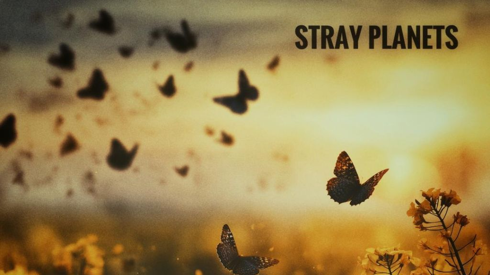

Stray Planets - Hallucinations

The following feature is now included in our online magazine which is also available in print.
Issue #5
Online Magazine | Print MagazineFor more details contact us at: volechomag@gmail.com
There is something basically addictive about music that seems to have been stashed away in this universe from some other parallel one. Stray Planets, the Dublin psych, pop cult band of songwriters John Butler, have been operating for years in that place where pop hooks dissolve into daydreamed hallucinations and the distinctions between nostalgia and unreality become deliquescled. With his latest EP Are You Real, Cristobal Leedy? Slipping November 7, Butler is not concerned with creating something tidy or cool, aligned and more devoted to trying to nail the psychic buzz of a world in which even your sense of self is brokered by code.
It's not an easy record in the traditional sense but it's richly rewarding in much the same way that a perfectly askew film lingers with you after the credits. This EP is not so much a return or a rebirth as it is an adolescence in a psychedelic terrarium that Butler never let evaporate. He has always had the presence of an underground legend who works to his own tempo, a cousin of Vinyl Williams or a mystical neighbor of Jacco Gardner. It still has that fuzzy aura you'd expect from, like, old Elephant 6 cassettes or similarly distorted '60s pop that sounds like it's been conjured up on some long-lost reel in a thrift store and re-mastered at just barely the right speed. But it all comes together here.
It is braver, more skewed, more there with never losing the logic of a dream. The EP starts with Your Revolution, a shoegaze-slated reflection full of laces, which is centered around the theme that even if artificial intelligence is as efficient as it is, it can't defeat a human just because it doesn't hurt. It is a concept that reads heavy on paper, but Butler lightens it up and makes it airy in a manner that doesn't make it any less real. If OK Computer had been penned after a session of binge, viewing TikTok deepfakes at 3 am, it would probably go a bit like this.
The guitars undulate in and out of space, and the vocals glide like a transmission lodged halfway between two frequencies. Lead single Hallucinations is the clear starting point, featuring guest vocals from Gilla Band's Dara Kiely. Kiely's vocal delivery is like he is describing the emotional breakdown of someone witnessing his face distort into something incomprehensible on a glitching AI screen. The tune has that Technicolor craziness of early Flaming Lips or that manic theatrics of The Coral at their more deranged best. It is demented, spinning, and nonsensical in a way that is completely calculated.
You can literally sense the ground spinning beneath your feet. And then there is the transient interlude Cristobal Leedy, named after a mysterious YouTube commenter who long ago referred to Stray Planets' music as "truly astonishing." Butler doesn't view it as flattery but as a metaphysical bug. He retorts with a question: Are you real? And if they are, then what am I?
In under a minute, he conveys something that rings true for anyone who has ever bared their soul in art and heard it reverberate back through a comment chain that might or might not have been penned by an actual human being.
Salvia languishes as a fevered flashback. Born of mid, to, late 2000s Capel Street, it's the missing scene from a movie between Enter The Void and Eternal Sunshine of the Spotless Mind where the hero realizes that they might never wake up. It's both city and ethereal-sounding, the sort of song you can't help but imagine when you think of neon, rainy streets and the odd euphoria of being free from time. The nearer Artificial Love brings the entire enterprise into bittersweet relief. It's four minutes of searing arpeggios and glassy psych, pop that would not sound out of place alongside a song by Tame Impala or Temples, but the emotional center is stranger and heavier. Butler sings as someone who has come to the realisation that love from a machine is preferable to none. The concept is ridiculous, pathetic, and eerily familiar during the time of parasocial relationships, AI companions, and artificial digital personas which are all now included in how humans deal with loneliness. The song isn't cynical, however. It's like a guy dancing with a phantom that he knows doesn't exist but dancing anyway. It is what makes this EP package more interesting than so much contemporary psych, pop that Butler isn't trying to impress anyone. It's like something that he created because he had to. That surrealism tension and sincerity places it in dialogue with other albums that hover just above the borders of mainstream pop storytelling, such as Broadcast's Haha Sound, Pond's The Weather, or even portions of King Gizzard's more pop-heavy discography. There is also a sense of self-consciously playful humor here that is more reminiscent of Terry Gilliam films or the off-kilter cartoon causality of early Adult Swim bumpers.
Follow Our Playlist For More Music!
This dispatch was last updated on October 21, 2025